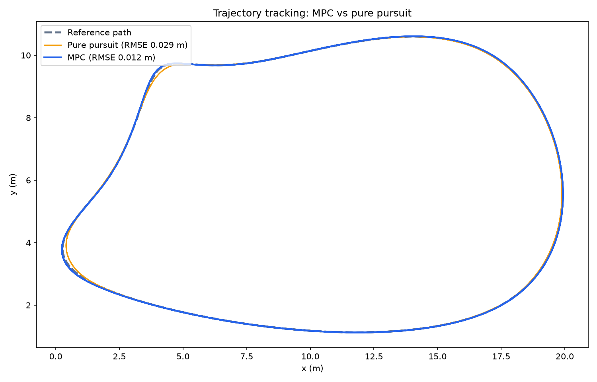

1.1SLAM 到底在解决什么问题？
想象你被蒙上眼睛推进一个陌生的房间，然后摘下眼罩——但只给你一个会转的激光测距仪 和一个计步器。现在要求你回答两个问题：
- 我在哪？—— 每一时刻的位置和朝向（定位）
- 这个房间长什么样？—— 一张完整的地图（建图）
难就难在：定位需要地图，建图又需要定位。知道"墙在正前方 3 米"是相对你此刻的位置和朝向说的； 而要知道"此刻的位置"，你又得知道已经走过了哪些墙。这是一个先有鸡还是先有蛋的问题—— SLAM（Simultaneous Localization And Mapping，同步定位与建图）就是把这个"死循环"打破的系统。
- 里程计（Odometry）：机器人靠轮子转数"感觉"到的运动 —— 便宜、即时，但误差会滚雪球。
- 激光雷达（LiDAR）：旋转测量一圈"我在哪、四面墙各有多远"—— 精确，但只告诉你相对形状。
- SLAM：把两者 clever 地融合起来，同时恢复轨迹和地图。
1.2课程结束时，你将拥有什么
两个真实跑通的成果（下图均由本课程代码生成，不是示意图）：


把两者拼起来，就得到一个最小但完整的移动机器人导航系统： 在未知环境里，自己建图 → 自己规划路径 → 自己控制执行。
1.3技术路线：11 个台阶
整个项目拆成下面的流水线，每一块对应课程的一章。看完这张图，你已经"知道全局"了—— 后面 10 章只是逐块弄懂它。
1.4环境准备（10 分钟）
只需要 Python ≥ 3.10 和四个常用库。不需要 ROS、不需要 GPU、不需要真实机器人。
# 1) 获取课程代码（如果还没有）
git clone <课程仓库> # 或者直接把 code/mini_slam 目录拷走
# 2) 创建独立虚拟环境（推荐，不污染系统）
cd mini_slam
python3 -m venv .venv
source .venv/bin/activate # Windows: .venv\Scripts\activate
# 3) 安装四个依赖
pip install -r requirements.txt # numpy scipy matplotlib osqp在新版 Ubuntu / Debian 上直接 pip install 会报错
externally-managed-environment。这是系统保护机制：不让你往系统 Python 里乱装包。
用上面的虚拟环境（venv）方式即可绕开；也可加 --user 安装到用户目录。
装好后，跑第一个程序——完整的 mini-SLAM（约 10 秒）：它会仿真机器人跑两圈、
建图、做回环优化，并把所有结果图输出到 assets/img/：
python run_slam.py=== 第 1 步：采集数据（机器人跑两圈） ===
轨迹 3220 帧（161.0 s，路径长 87.3 m）
=== 第 2 步：ICP 前端 + 回环检测 ===
[前端] 总帧数 3220，关键帧 110（退化帧 0）
[前端] 回环边 10 条
=== 第 3 步：位姿图优化（Gauss-Newton） ===
[PGO] iter 1: cost = 624.7163
[PGO] iter 2: cost = 60.7015
...
[评估] 关键帧 ATE RMSE 优化前: 0.224 m → 优化后: 0.223 m看到 ATE RMSE 这行，你的环境就完全就绪了。这三个数字后面会反复出现：
| 输出 | 含义 | 典型值 |
|---|---|---|
路径长 87.3 m | 机器人两圈走过的总里程 | — |
回环边 10 条 | 后端检测到 10 次"重游旧地" | > 0（没有回环 = 漂移无法修正） |
ATE RMSE | 估计轨迹与真值的平均误差（第 8 章细讲） | 里程计 0.78 m → SLAM 0.22 m |
1.5代码仓库导览
| 文件 | 内容 | 行数 | 对应章节 |
|---|---|---|---|
world.py | 2D 世界（线段墙体）+ 光线投射 | ~90 | 第 3 章 |
robot.py | 运动学 · 里程计噪声 · 雷达 · 航点跟踪 | ~130 | 第 3、4 章 |
icp.py | 点到点 ICP（SVD 闭式解） | ~90 | 第 5 章 |
grid_map.py | 占据栅格 + log-odds 更新 | ~90 | 第 6 章 |
pose_graph.py | SE(2) 位姿图 + Gauss-Newton | ~110 | 第 7 章 |
run_slam.py | 完整 SLAM 流水线 + 评估 + 出图 | ~300 | 第 8 章 |
run_mpc.py | MPC 控制器（OSQP）+ 纯追踪对照 | ~330 | 第 9 章 |
run_astar.py | A* 规划 + 膨胀 + 视线拉直 | ~180 | 第 10 章 |
建议阅读顺序就是章节顺序。每个文件都是自包含的，注释密度按"新手第一遍就能读懂"来写。
1.6怎么学效果最好
- 手敲代码，不要复制粘贴。SLAM 的每个公式都"住在"某一行代码里，手敲一遍等于把公式在脑子里过一遍。
- 每个交互仿真至少玩 3 分钟。调坏它：把噪声拉满、把初值拖歪——知道系统怎么坏掉，比知道它怎么工作更有用。
- 卡住就回头看检查点。每章末尾有一个"离开本章前你应该能做到"清单，全部打勾再前进。
- 改坏东西是好事。课程代码没有"不能动"的部分；第 8 章还有专门的"破坏性实验"清单。
- 能用自己的话解释"定位与建图互为前提"的鸡生蛋问题
- 虚拟环境建好，
pip install -r requirements.txt成功 python run_slam.py跑通，看到 ATE RMSE 数字，并在assets/img/找到生成的 PNG- 知道仓库里 8 个文件分别负责什么
练习 1 · 换一个世界尺寸跑 run_slam.py
world.py，把 World(size=(20.0, 12.0)) 改成
(14.0, 10.0) 再跑。注意 run_slam.py 里的航线（17.5, 9.8 等航点）
会跑出房间——你需要同步修改航线。这个练习的目的：让你意识到航线与世界几何是耦合的，
这正是真实机器人部署时要小心的地方。练习 2 · 观察随机性的影响
run_slam.py 的 main() 里把 np.random.seed(7)
改成别的数字再跑几次。你会发现 ATE 在 0.15 ~ 0.4 m 之间波动——SLAM 结果天然带随机性，
论文里报的是"多次运行的平均 ± 方差"，单一数字只是样本。